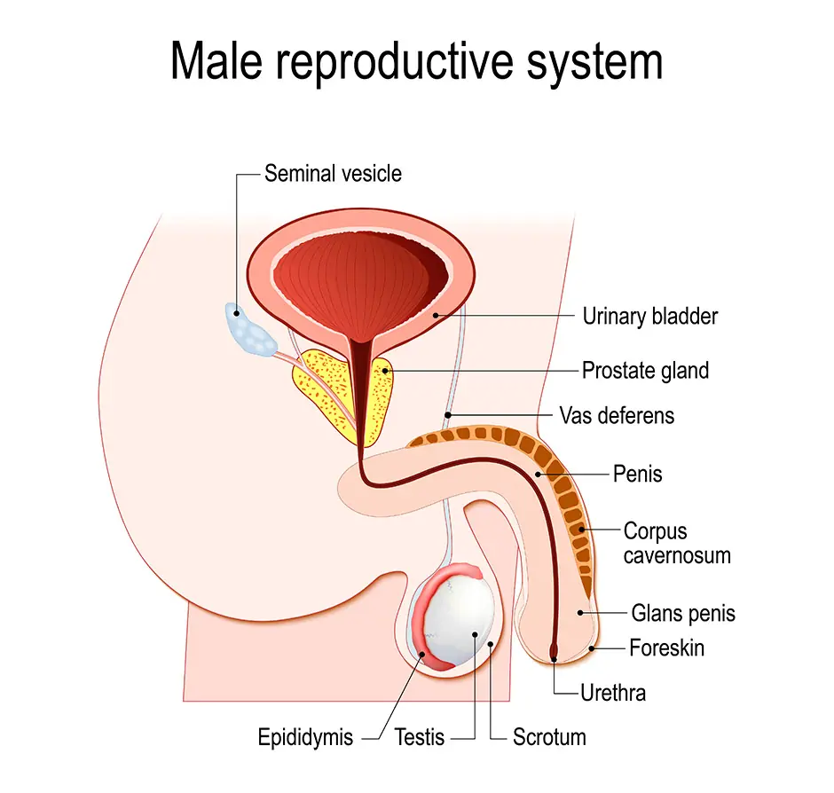
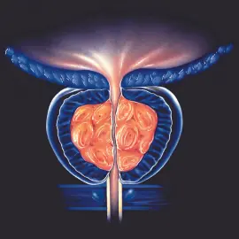

What is Prostate Cancer?

Know your prostate - the anatomy
The prostate is a male sex gland located just below the bladder and in front of the rectum. Along with the testicles and seminal vesicles, are part of the male reproductive system as shown in the diagram below. It surrounds the urethra, the tube that carries urine and semen out of the body through the penis.
The prostate produces some of the fluid that makes up semen, which enriches and protects sperm when men ejaculate. The male hormone testosterone, which is made by the testicles, enables the prostate gland to grow and develop during puberty. In an adult, the prostate gland is usually about the size of a walnut and it is normal for it to grow larger as men age. Sometimes this can cause problems, such as difficulty with passing urine, and may develop into a benign condition called Benign Prostatic Hyperplasia (BPH). Tumours can also develop in the prostate, these are known as prostate cancer.

Prostate cancer - what is it?
The body is made of cells that grow and divide. When this process becomes abnormal, cells can form a tumour. Benign tumours do not invade nearby tissues or spread around the body, while malignant tumours are cancerous and may spread.
Prostate cancer develops when abnormal cells grow in the prostate. It can stay within the gland or spread beyond it. The precise cause is not known, but prostate cancer growth is often influenced by testosterone. The rate of growth varies: some cancers remain slow-growing, while others are more aggressive.
The chance of prostate cancer increases with age and is higher for people with a close relative, such as a father or brother, who has had it. Inherited gene changes, including BRCA1 or BRCA2, can also increase risk. Anyone with a prostate can develop prostate cancer, including transgender women, non-binary people assigned male at birth, and intersex people.
Prostate cancer in New Zealand
It is our most commonly diagnosed cancer (apart from skin cancers) in New Zealand. Every year more than 4000* are diagnosed with the disease and over 700* die - the second highest cause of cancer death in men behind lung cancer. For all sexes it sits third behind lung and bowel cancers.
Māori men have a slightly lower incidence of prostate cancer but have a higher death rate than other New Zealand men. The reasons for this may be a later diagnosis or treatment choices offered to them.
Overall, the number of men diagnosed in New Zealand is increasing, largely due to increased rates of testing and the death rate is slowly dropping, largely due to better outcomes from early diagnosis and improved treatments available.
Men are more likely to develop prostate cancer as they get older. It is also more common in men who have a father or brother with prostate cancer, and in families who carry certain genes such as the BRCA1 or BRCA2 genes.
Types of prostate cancer
Prostate cancer is described according to where it is located in the body. Most grow very slowly and about 95% of men survive at least 5 years after diagnosis, particularly if diagnosed with localised prostate cancer, and about 90% will survive 10 years beyond diagnosis.
Localised – prostate cancer that is confined to the prostate gland.
Locally advanced – prostate cancer that extends into the surrounding tissues near the prostate or into the pelvic lymph nodes.
Advanced or metastatic – prostate cancer that has spread to other parts of the body including other organs, lymph nodes (outside the pelvis) and bones.
Benign prostate conditions
Benign prostate conditions - Prostate problems are often not the result of prostate cancer. Two common benign conditions with similar symptoms are:
Prostatitis
Is an infection of the prostate which can cause pain, fever, swelling of the prostate and, blood and pus in the urine. It may have symptoms similar to BPH but is usually treated with antibiotics. Infection of the bladder usually occurs at the same time. See your doctor if blood appears in the urine (Haematuria).
Benign Prostate Hyperplasia (BPH) – enlarged prostate
From about the age of 40, a man’s prostate begins to enlarge and create a condition called Benign Prostate Hyperplasia (BPH). Benign means it is not cancer, and hyperplasia means ‘too much tissue’. The likelihood of developing BPH increases with age and eventually 80% of men have enlarged prostates, but many will never have symptoms.
The enlarged prostate puts pressure on the urethra and causes problems urinating. Medicines or surgery are used to treat BPH but only when symptoms become troublesome. Remember, BPH is not prostate cancer even though most of the symptoms are the same when passing urine.
Symptoms of prostate cancer
Prostate cancer can develop silently and remain undetected for some time, without causing symptoms.
If symptoms are present they may include the following. But please note, many are common in men as they age, often caused by other prostate conditions such as an enlarged prostate (benign prostatic hyperplasia or BPH). Always see your doctor if you experience any of these symptoms.
1. Feeling the frequent or sudden need to urinate, especially at night
2. Finding it difficult to urinate (e.g. trouble starting or not being able to urinate when the feeling is there)
3. Discomfort when urinating
4. Finding blood in urine or semen (never ignore this)
5. Pain in lower back, upper thighs or hips
6. Bone pain
7. Unexpected weight loss.
More options are available if prostate cancer is detected before it causes symptoms, so a GP visit for a check at least once a year is vital.
Section 1 of 2
Prostate Quiz
Test your knowledge from this section by answering the following questions